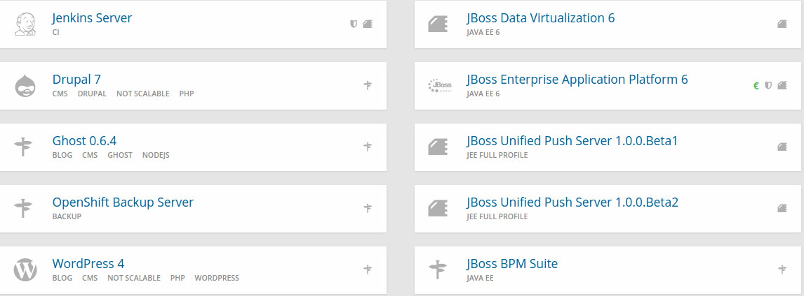
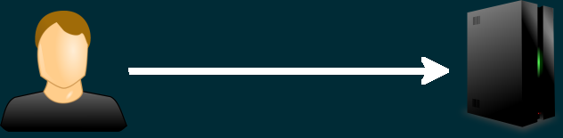
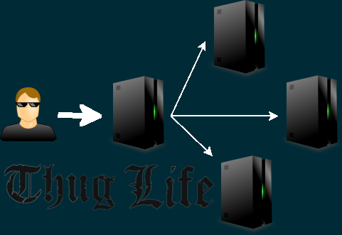

PáaSalo
publica tu aplicación fácilmente usando plataformas como servicio
#miercolesgeek
25 de noviembre del 2015¿Qué es un PaaS?
¿Cómo funcionan? ¿Por qué usarlo? ¿Para qué? ¿A que huele el "cloud"? ¿Hay pegatinas?
"... chapuzas y varios"
Es lo que voy a contar yo
¿Quién soy?
Israel Blancas
¡Aviso!
230.000.000
¿Tú que PaaS usarías?
Utilidades chachis de OpenShift
- Hot Deployment
- Action Hook
- Cron Jobs
- Cualquier cosa del "Marketplace"
Utilidades chachis de Heroku
- Marketplace muy completo
- Scheduled Jobs and Custom Clock Processes
Hay que poner tarjeta de crédito para vivir en condiciones, por lo que pierde SWAG
Google App Engine
- Fácil integración con servicios Google
- Varias formas de trabajar en background
- Sistemas de BD propios
- PHP, Go, Java y Python

Otros
No probados o considerados insuficientes*
*Forma elegante de decir basura¿Gratis y se apaga?
Ping...
Desde un servicio EXTERNO
Servicios como "Up time robot"
Juan Palomo... y "to" eso (1)
¿Qué es realmente un "cartridge" de OpenShift?
Juan Palomo... y "to" eso (2)
Un cartridge sin nada -> Do-It-Yourself
¡¡EJECUTA LO QUE "SEA"!!
Recuerda que no eres root
Granja web pachanguera (1)
Nos podemos quedar cortos
(o simplemente queremos hacerlo más "chupiguay")
Granja web pachanguera (2)
Usamos un "router" o nos "fabricamos" uno
Quita, que tú no sabes
OpenShift Cartridge Development Kit
Permite crear tu propio cartridge. Tú eliges qué cosas trae instaladas y cuales no
Todo "as a Service"
- Mobile Backend aaS
- Database aaS
- Compute Infrastructure aaS
- Big Data aaS
Consejos varios
- Usa Git
- Usa GitHub
- Trastea todo lo que puedas
- Echa un ojo a http://blog.iblancasa.com/calendario/
- Sígueme en @iblancasa
- Asistid a "cosas"
Y poco más
Gracias por venir (¿dudas, apelaciones, insultos?)